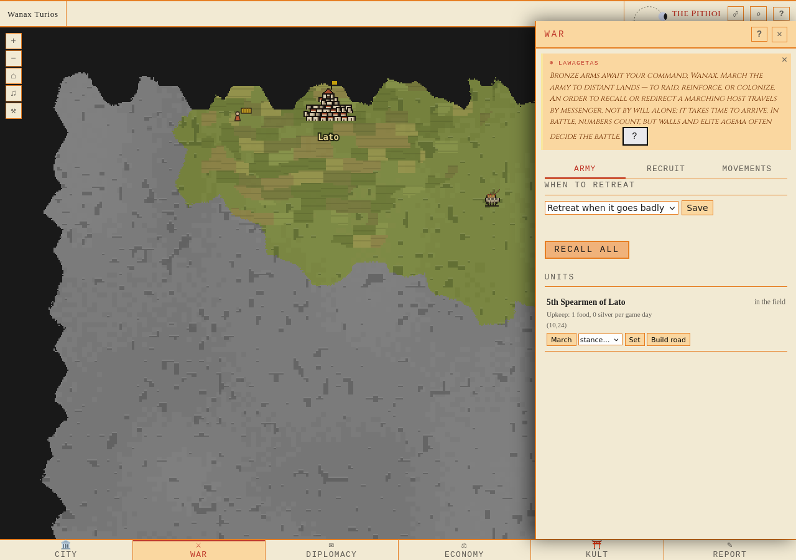
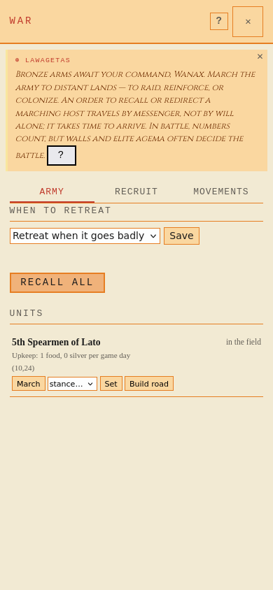

Isolerad testvärld med explicit inkommande returrutt; verklig Keryx-order, Runner och worker. Båda bilderna visar samma normala enhetskort. Driftens5th korrigeras separat med migration217 utan att byta fysisk hex.
Rapport · Täckning · Privat driftkopia: hashbevis

